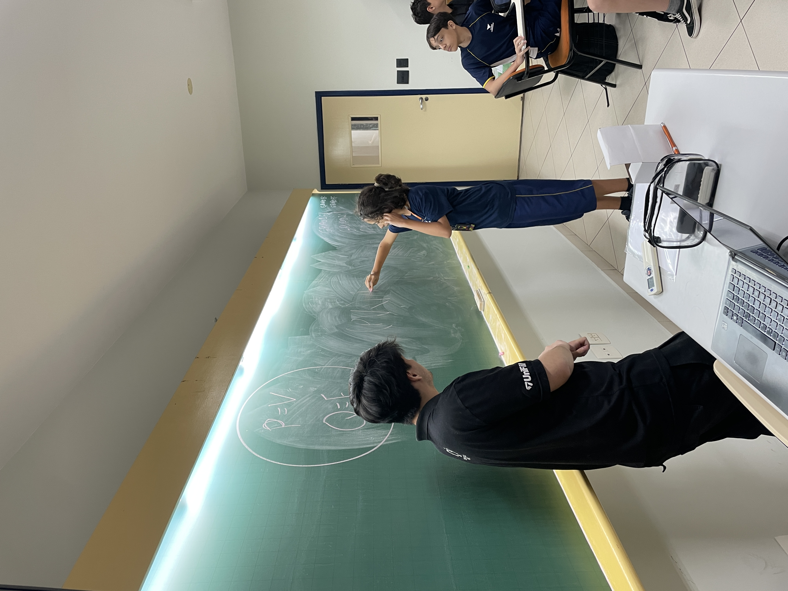

Relatório – Introdução à Tabela Verdade
Data: 09/03/2026
Turma: 8º e 9º ano
Professor: Kawan
Relatório – Introdução à Tabela Verdade
No dia 09/03/2026 foi realizada a aula com as turmas do 8º e 9º ano do Ensino Fundamental, dentro do projeto LondrinenseTech. O conteúdo trabalhado foi a introdução à lógica proposicional e à construção de tabelas verdade.
A explicação foi conduzida pelo instrutor Kawan, utilizando projetor para apresentar os conceitos de proposição, valores lógicos (verdadeiro e falso) e operadores lógicos como E, OU e NÃO. Durante a explicação, os alunos puderam acompanhar exemplos práticos e observar como as tabelas verdade são construídas.
Após a parte teórica, foi realizada uma atividade dinâmica em forma de competição entre equipes. Os alunos foram divididos em grupos e receberam desafios envolvendo tabelas verdade, que deveriam ser resolvidos em conjunto. A atividade teve como objetivo incentivar o trabalho em equipe e reforçar o entendimento do conteúdo de forma prática.
Durante a dinâmica, vários alunos se mostraram bastante participativos, e alguns se destacaram na resolução dos desafios. A competição gerou grande entusiasmo na turma, deixando os alunos motivados, animados e envolvidos com a atividade proposta.

Conclusão
A aula atingiu o objetivo de introduzir o conceito de tabela verdade de forma clara e dinâmica, permitindo que os alunos compreendessem os fundamentos da lógica proposicional. A utilização do projetor facilitou a explicação dos conceitos, enquanto a atividade em grupo ajudou a reforçar o aprendizado de maneira prática e divertida.
A participação dos alunos foi positiva, e a dinâmica utilizada mostrou-se eficiente para manter a turma interessada no conteúdo. De modo geral, a aula foi produtiva e contribuiu para o desenvolvimento do raciocínio lógico dos estudantes.